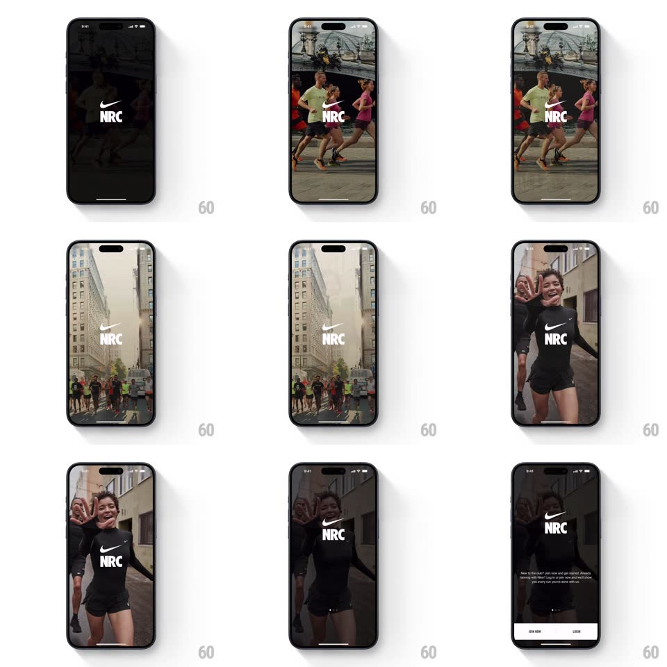

Media
Frame-by-frame

Rebuild this animation 1:1: Nike Run Club's splash - a black screen with the white swoosh + NRC lockup, then a looping video montage of runners fades in behind the static logo before the login options rise.

Rebuild this animation 1:1: Nike Run Club's splash - a black screen with the white swoosh + NRC lockup, then a looping video montage of runners fades in behind the static logo before the login options rise. ## Integration Integration: stack-agnostic spec - springs given as stiffness/damping, timed motions as duration + curve; map every value to your framework and animation library of choice. ## Scene Black screen, centered white Nike swoosh above "NRC". Behind it, a full-bleed video montage of runners (city races, finish-line moments) fades up and loops. Login options (Join Us / Sign In style buttons) eventually rise from the bottom. ## Motion spec Pattern: logo hold + video fade-behind. - Phase 1 (0-700ms): pure black with the white lockup at center, no motion. - Phase 2 (700-1500ms): the video montage fades in behind the logo (opacity 0 to 1, 800ms) - the logo never moves, scales, or changes; the footage crossfades between clips every ~2.5s (500ms crossfade), always full-bleed with a slight slow zoom (scale 1 to 1.06 per clip). - A subtle dark gradient at the bottom (black 0 to 55%) fades in with the video to keep the coming buttons legible. - Phase 3 (1500ms+): the two auth buttons slide up into the bottom safe area (translateY 40px to 0 + fade, 350ms, staggered 80ms); the primary is solid white with black text, the secondary is outlined. - The montage keeps looping behind the buttons indefinitely. ## Calibration - The logo is the anchor: absolutely static through every phase - all energy comes from the footage. - Clips crossfade, never hard-cut. ## Reduced motion Static hero image behind the logo; buttons fade in. ## Don't miss - White logo on whatever the footage shows - add no background pill or shadow behind it. - The montage is aspirational (races, finish lines, groups) - not product UI screenshots.